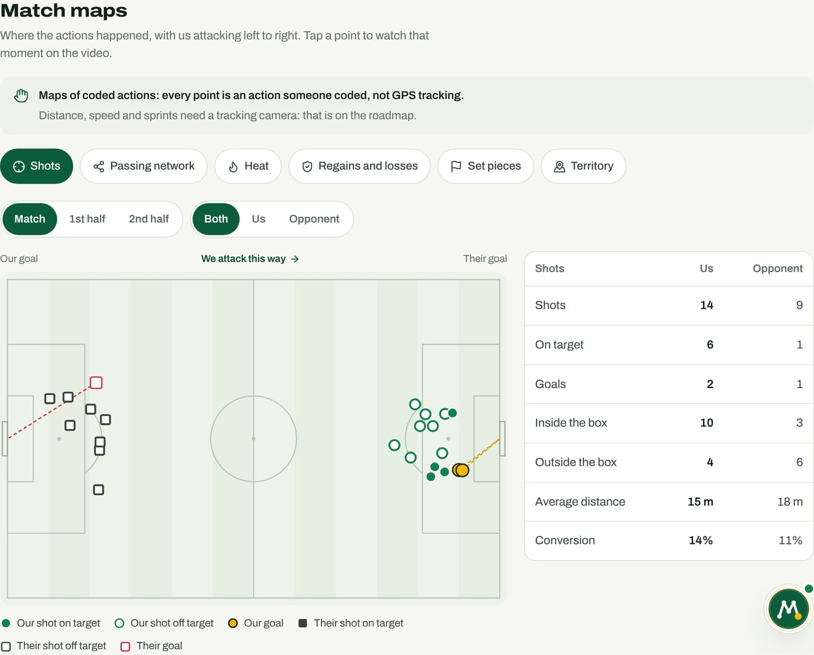
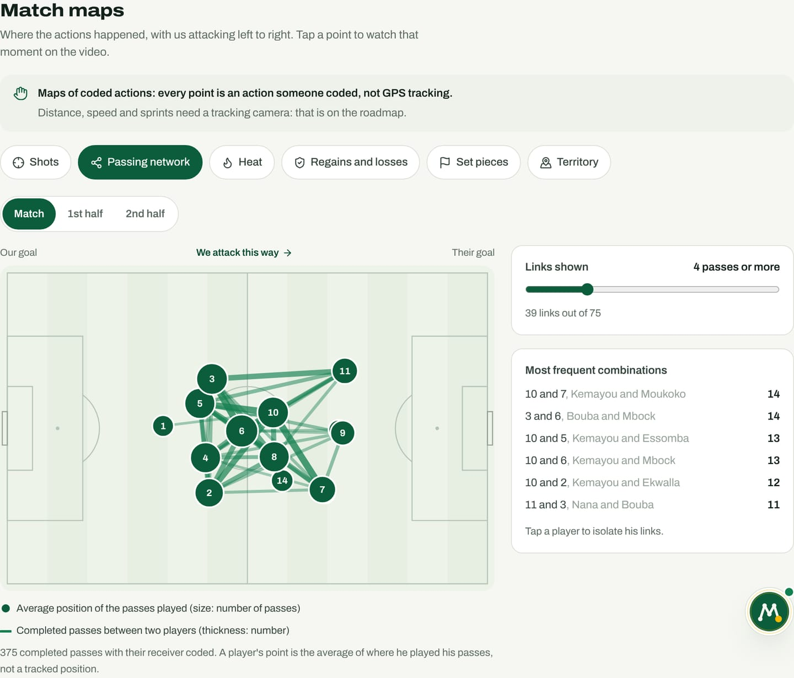
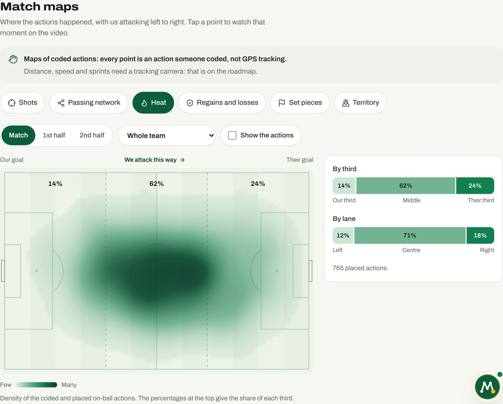
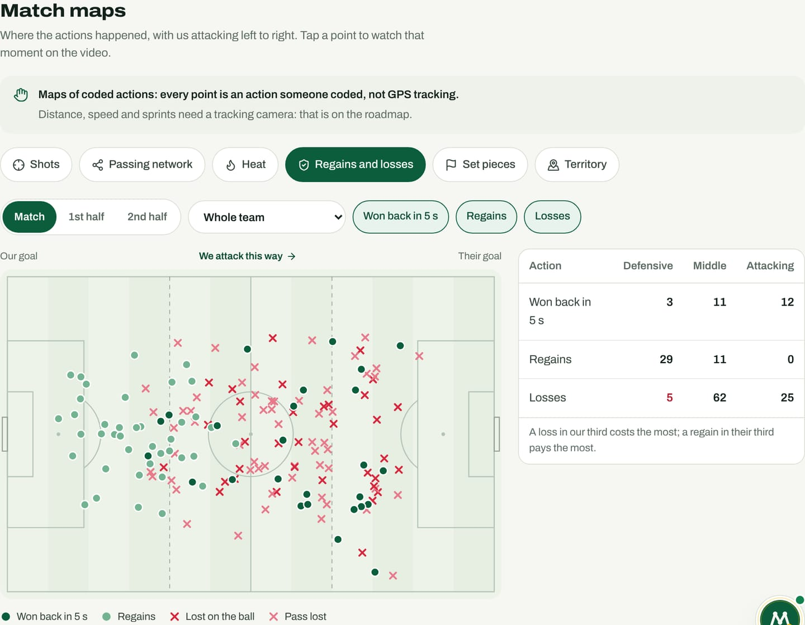
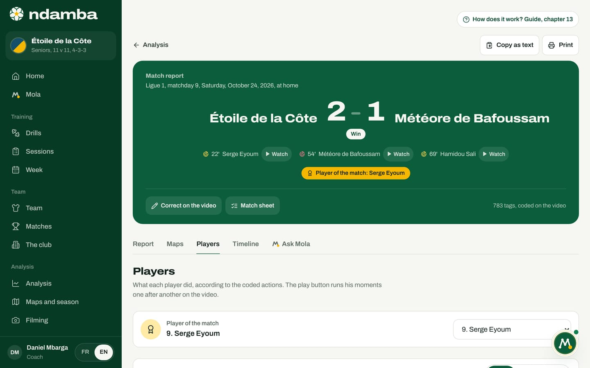
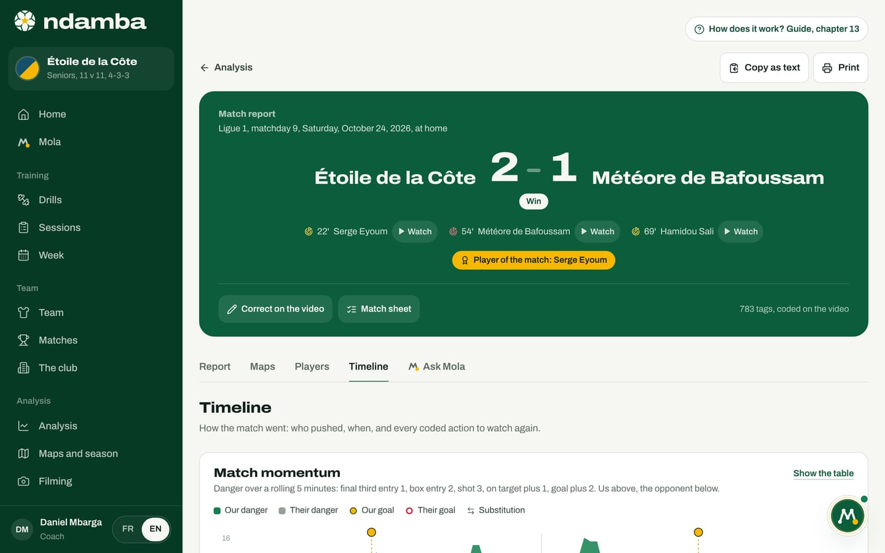
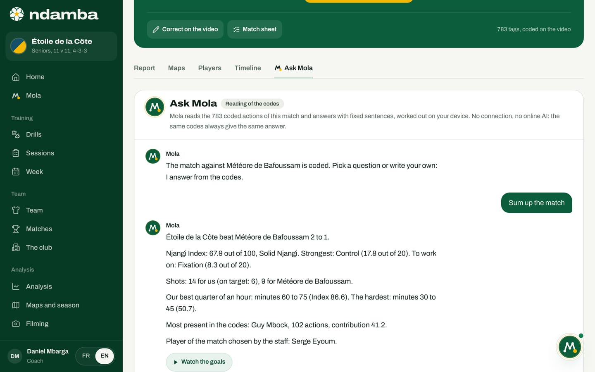
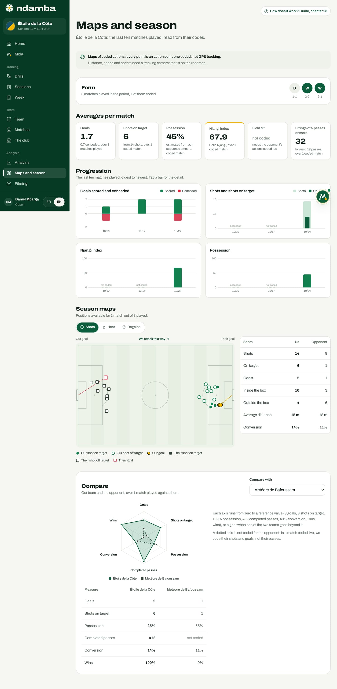
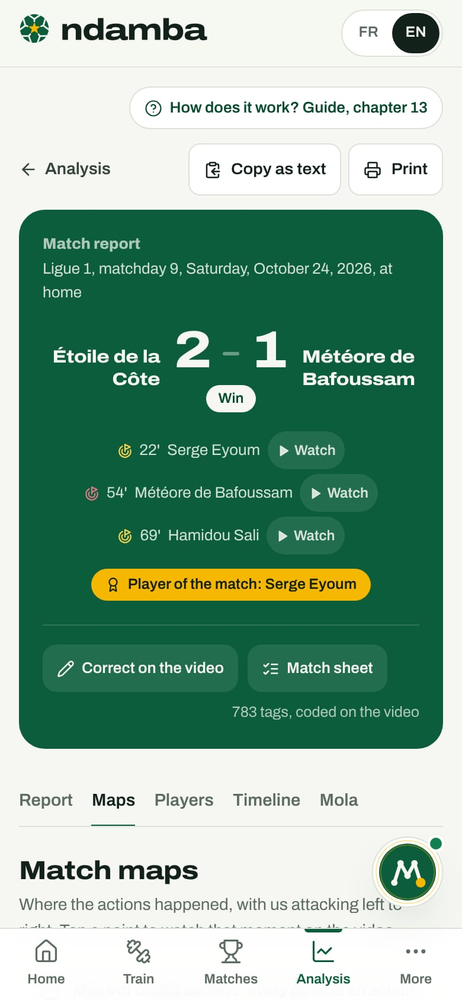

The match maps and the season
The tabs of the match report (Maps, Players, Timeline, Ask Mola), what each map shows and how its numbers are worked out, then the Maps and season page, which reads the last ten matches. With the honesty rule: a map shows actions that someone coded and placed with a tap, not player tracking.
13 min read
The Njangi Index tells you whether the team possessed with purpose. It does not tell you where. A coach thinks in spaces: which lane we go through, where we lose the ball, who plays with whom, when the match turned. The maps answer those questions with the same codes as the Index, on one condition: every coded action also has its place on the pitch. This chapter opens the four visual tabs of the match report, then the Maps and season page, which does the same reading over the whole season.
One rule first, which the app shows at the top of every map: "Maps of coded actions: every point is an action someone coded, not GPS tracking." And the next one: "Distance, speed and sprints need a tracking camera: that is on the roadmap." A point on a map is a person who tapped a code, then tapped the spot on the pitch where the action happened. Nothing is measured automatically.
Where the positions come from
Positions are entered in the video studio, while coding (chapter 29). Turn on Place on the pitch (key M): after each code, a mini-pitch opens with the question "Pass at 21:40: where, and who?". Tap the spot of the action (our attack goes left to right), then the player’s number under Who?, and for a pass the receiver under Received by. For an opponent’s action only the spot is asked for. All of it is optional: Skip carries on without placing.
The demo match, Étoile de la Côte v Météore de Bafoussam (2-1), was coded this way on its video: 783 actions, almost all placed and credited. That is why its maps are full. A match coded live, or coded without placing, keeps its Index and its report, but its maps stay empty: "The actions of this match have no position yet. Open the video and code with “Place on the pitch”: every placed action shows up here." If only some of the actions are placed, a banner gives the count, for example in the demo: "773 of our 774 coded actions have a position on the pitch: the maps show those."
The five tabs of the report
The match report (chapter 13) now carries five tabs under its header: Report, Maps, Players, Timeline and Ask Mola (just Mola on a phone). Report is the page of chapter 13: the gauge, the sub-indices, the summary, the targets and the drills. The other four load on demand, so the report stays light on a phone. Each tab has its own address, for example /app/analyse/rapport/ma_past?onglet=cartes: you can send the shot map straight to an assistant.
Everywhere, a point, a row or a Watch button opens the video studio a few seconds before the action. When several moments are asked for at once (all of a player’s shots, for example), the studio’s address carries the list of those moments (?list=) and the studio plays them one after another: a Chosen moments strip shows "Moment 1 / 4" for Serge Eyoum’s four shots, with Previous moment, Next moment and Watch this moment again. Each moment plays from four seconds before to four seconds after the action.
Maps
The Match maps tab states its convention: "Where the actions happened, with us attacking left to right. Tap a point to watch that moment on the video." Six maps are chosen at the top: Shots, Passing network, Heat, Regains and losses, Set pieces and Territory. A Period filter (Match, 1st half, 2nd half) goes with all of them.
Shots


Every shot is a point: a circle for us, a square for the opponent; filled when on target, hollow when not, larger for a goal. The Team filter (Both, Us, Opponent) isolates one side. The table compares the two teams:
| Shots | Us | Opponent |
|---|---|---|
| Shots | 14 | 9 |
| On target | 6 | 1 |
| Goals | 2 | 1 |
| Inside the box | 10 | 3 |
| Outside the box | 4 | 6 |
| Average distance | 16 m | 18 m |
| Conversion | 14% | 11% |
Distance is measured from the placed point to the centre of the goal being attacked, on a pitch of 105 by 68 metres. Conversion is the share of shots that end in a goal. Reading the demo: Météore de Bafoussam shot six times from distance and only three times inside the box. The block held; it is the rest defence that needs watching on their goal.
Passing network


The network draws each player at the average position of the passes he played (the size of the circle follows his number of passes) and links two players with a line whose thickness follows the number of completed passes between them. It needs passes coded with both passer and receiver: 375 in the demo. The map reminds you: "A player’s point is the average of where he played his passes, not a tracked position."
The Links shown setting sets a threshold ("4 passes or more" shows 39 links out of 75) to keep the map readable. Tap a player to isolate his links, with the number of passes he gave and received, and Watch all his completed passes on the video; Show all brings everything back. The Most frequent combinations list gives the pairs: in the demo, Kemayou and Mbock (15), Bouba and Mbock (14), Kemayou and Moukoko (14). The pivot, Mbock, really is the relay the game plan describes.
Heat


The heat map shows the density of coded and placed on-ball actions, from Few to Many. The Player filter goes from Whole team to a single player; Show the actions puts the points themselves on top. Below come two breakdowns: By third (15% in our third, 62% in the middle, 24% in their third for the demo) and By lane (12% left, 71% centre, 17% right), over 765 placed actions. A model that wants to "draw them to one side to attack the other" can be checked here: 71% through the centre is a team that does not yet go looking for the flanks enough.
Regains and losses


This map places the Won back in 5 s, the Regains and the Losses, telling Lost on the ball from Pass lost. The Player filter isolates one player. The table counts each action by zone:
| Action | Defensive | Middle | Attacking |
|---|---|---|---|
| Won back in 5 s | 3 | 11 | 12 |
| Regains | 30 | 10 | 0 |
| Losses | 5 | 63 | 24 |
The line under the table says how to read it: "A loss in our third costs the most; a regain in their third pays the most." Here, 12 win-backs within 5 seconds in the opponent’s third: the counter-press of the game model is working.
Set pieces
Corners, free kicks, penalties, throw-ins and goal kicks are coded separately in the studio (chapter 29) and never count in the Index. Coded and placed, they appear on this map with a table by type. The demo match has none: the map shows "No set piece coded in this match. Code corners, free kicks, penalties and throw-ins on the video to see them here."
Territory
The Territory map cuts the pitch into three thirds and gives the share of our placed on-ball actions in each: 15% (112 actions), 62% (472) and 24% (181) in the demo. It also gives two markers, each with its method written under the number.
Possession. When the opponent’s passes are coded, it is the share of passes: our passes divided by both teams’ passes. When they are not, Ndamba estimates it from time: a sequence of ours starts at a regain (or at our first action) and ends at a pass lost, a loss or a shot; the time between two of our sequences counts for the opponent. The demo shows 45%, "Estimated from the duration of our coded sequences: the opponent’s passes are not coded."
Field tilt. It is our share of the actions played in the attacking thirds: our placed actions in their third, divided by our actions in their third plus theirs in ours. Without positions, Ndamba falls back on the codes: our final third entries divided by both teams’ entries. So the opponent has to be coded too (keys Q, W and E): in the demo the map says "Needs coding".
Players


"What each player did, according to the coded actions. The play button runs his moments one after another on the video."
The player of the match. At the top, Player of the match and the Choose the player of the match list. The choice belongs to the staff; it then shows in the report header ("Player of the match: Serge Eyoum") and on the player’s card.
Compare two players. Choose a First player and a Second player, then Match (the totals) or Per 90 minutes (the totals scaled to 90 minutes of play, fairer for a substitute). The two columns line up passes completed, progressive actions, final third and box entries, shots, goals, regains, 5-second win-backs, pins and switches, and losses.
The cards. One card per player who played or was coded ("14 players"), sorted by Contribution or by Number. Each card gives the position, starter or substitute, the minutes, then the rows Passes completed (58 of 64, 91% for Guy Mbock), Progressive, Final third, box, Shots (with on target and goals), Regains (with those within 5 s) and Losses, plus two mini-maps, Heat and Passes. Each row has a play button: it opens the studio with the list of those moments, for example Serge Eyoum’s four shots, one after another.
The contribution. The number at the top of the card (43.2 for Guy Mbock) is not a rating. The app says so: "Contribution: a reading of the codes, not a rating." Each action carries a fixed weight: completed pass 0.1; progressive 1; line broken 1.5; final third entry 1; box entry 1.5; shot 1; on target 1 more; goal 4; won back in 5 s 1.5; regain 1; pin or switch 1; pass lost minus 0.6; loss minus 1. A pivot who touches every ball scores high; so does a striker who touches it little but scores. For a young player, this number stays with the staff.
Timeline


"How the match went: who pushed, when, and every coded action to watch again."
Match momentum. A curve minute by minute, our danger above the line, the opponent’s below, with goals and substitutions. The calculation is written under the curve: over a rolling five minutes, a final third entry is worth 1, a box entry 2, a shot 3, a shot on target 1 more and a goal 2 more. Show the table gives the values minute by minute.
The Index by quarter of an hour. The Njangi Index worked out from the codes of each 15-minute block. In the demo: 70.7 from 0 to 15 minutes, 60.3 then 50.7 up to half-time, 64.5 after the break, 86.6 from the 60th to the 75th minute, 78.1 to finish. The team dipped before the break and dominated after the hour, when the winning goal came. The app warns: in a short block a few actions move the number a lot; read the trend.
Every action. The list of the match, by period, filtered by Kind of action (Key moments, Danger, Possession, Pinning, Transitions, Set pieces, Everything), by team and by player. The demo’s Key moments come to 26 rows: shots, goals and substitutions ("66’ Substitution: Hamidou Sali on, Aristide Moukoko off"). Each row has its Watch button, and Play all 23 moments plays the whole selection.
Ask Mola


This tab is not an online assistant. Its label says so: "Mola reads the 783 coded actions of this match and answers with fixed sentences, worked out on your device. No connection, no online AI: the same codes always give the same answer."
The suggested questions are Sum up the match, Our trends, How they played, Our finishing, Where do we lose the ball?, Who mattered most?, Our pressing and Strengths and weaknesses. You can also type your own question in Your question about this match; Mola recognises these topics and possession. To Sum up the match, the demo answers:
Étoile de la Côte beat Météore de Bafoussam 2 to 1. Njangi Index: 67.9 out of 100, Solid Njangi. Strongest: Control (17.8 out of 20). To work on: Fixation (8.3 out of 20). Shots: 14 for us (on target: 6), 9 for Météore de Bafoussam. Our best quarter of an hour: minutes 60 to 75 (Index 86.6).
Answers often end with a button that opens the moments on the video: Watch the goals, Watch our shots, Watch our losses before their shots. The foot of the tab keeps the rule: "A reading of the match codes, not an opinion: check it on the video."
The Maps and season page
In the menu, under Analysis, tap Maps and season (address /app/analyse/studio). The subtitle sets the scope: "Étoile de la Côte: the last ten matches played, read from their codes." The two honesty lines follow, as on the match maps.


Form. The latest results as W, D, L pills, with the score and the opponent, and the count: "3 matches played in the period, 1 of them coded." A match that was not coded only brings its score.
Averages per match. Six tiles, each with the basis of its calculation:
| Tile | Demo | Basis |
|---|---|---|
| Goals | 1.7 | "0.7 conceded, over 3 matches played" |
| Shots on target | 6 | "from 14 shots, over 1 coded match" |
| Possession | 45% | estimated from our sequence times |
| Njangi Index | 67.9 | Solid Njangi, from the summed codes |
| Field tilt | not coded | needs the opponent’s actions coded too |
| Strings of 5 passes or more | 32 | longest: 17 passes |
The season Index is always worked out from the summed codes of every coded match, never from the average of the Indexes: a fully coded match weighs more than a half-coded one.
Progression. Four bar charts, oldest to newest: Goals scored and conceded, Shots and shots on target, Njangi Index and Possession. A match that was not coded is marked "not coded". Tap a bar for its detail and Open its report.
Season maps. The Shots, Heat and Regains maps (with Add the losses) over every match of the period that has positions: "Positions available for 1 match out of 3 played."
Compare. In Compare with, choose an opponent you have played or another team of the club. A six-axis radar (Goals, Shots on target, Possession, Passes completed, Conversion, Wins) overlays the two teams, with the table of values. Each axis runs from zero to a reference value (3 goals, 8 shots on target, 100% possession, 450 completed passes, 40% conversion, 100% wins), or further if one of the teams goes past it. A dotted axis is not coded for the opponent. Comparing the seniors with the club’s U19s shows at a glance where the younger side still has to grow before stepping up.
With no team, the page asks you to Create your team first; with no match played, it offers Open the videos and Schedule a match.

